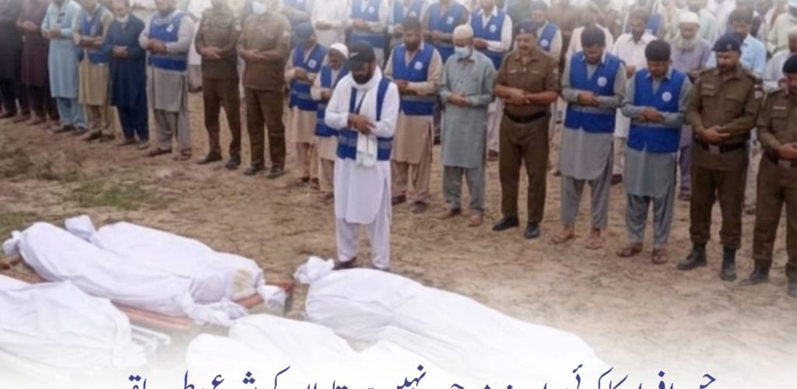
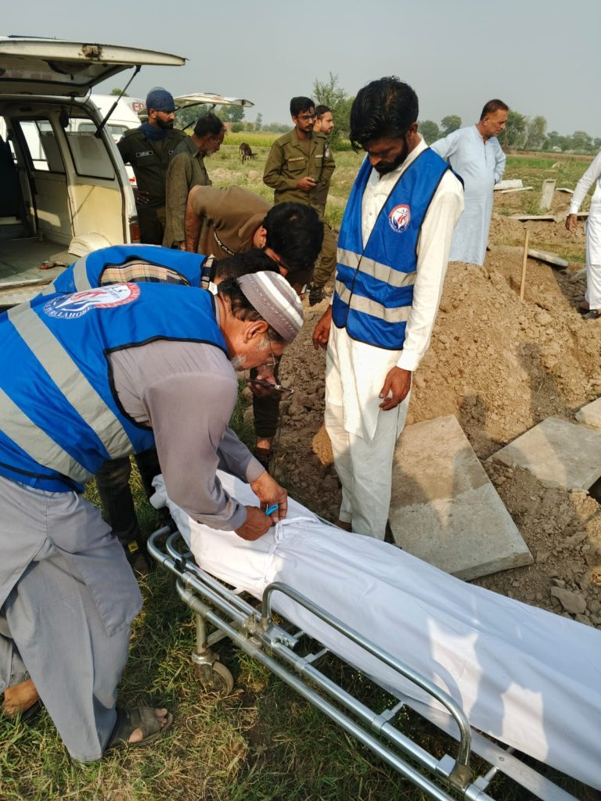
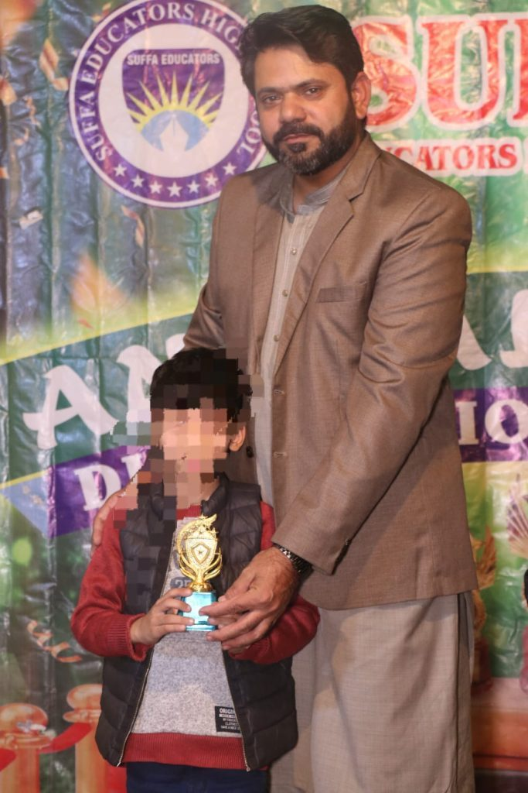
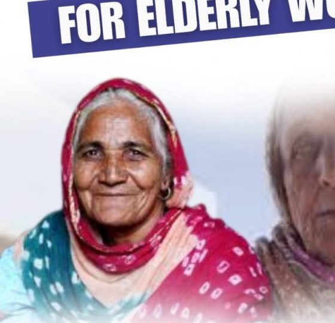
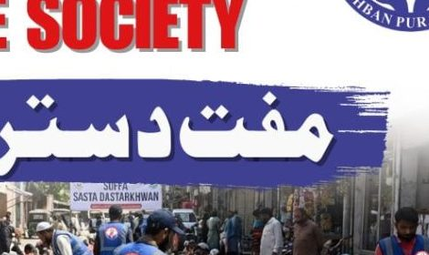
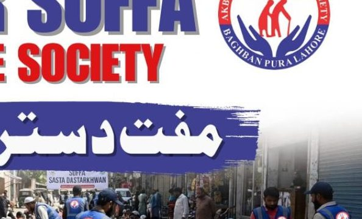
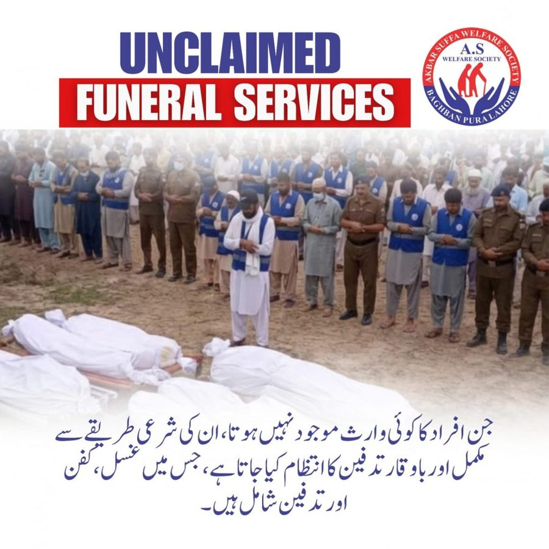

Unclaimed Funeral Support
When someone dies with no family, no money and no one to claim them, we step in as family — ghusl, kafan, janaza and a dignified burial, completely free.
Learn more →
When a person dies in Lahore with no family, no money and no one to claim them — we become their family. And while they live, we feed them, teach their children, and care for their mothers. That is the work your donation makes possible.

From one neighbourhood in Lahore, our volunteers work with hospitals, police and local families so that nobody faces their hardest day alone — not in hunger, not in illness, and not in death.
Every project answers a real cry for help in our community — and every one of them runs on your generosity.
When someone dies with no family, no money and no one to claim them, we step in as family — ghusl, kafan, janaza and a dignified burial, completely free.
Learn more →
Free schooling, books and mentorship for children whose parents cannot afford fees — because poverty should never decide a child's future.
Learn more →
A fixed monthly stipend, delivered with respect, so widowed and elderly mothers never have to beg for food, medicine or rent.
Learn more →
Food, care and shelter for elderly people left entirely alone — so no elder of our community spends their final years abandoned.
Learn more →
Fresh, warm meals served daily with dignity. Pay a token amount if you can — eat free if you cannot. Nobody can tell the difference.
Learn more →Free check-ups and essential medicines for patients who would otherwise go untreated — because healthcare should not depend on a wallet.
Learn more →He had no name in the hospital register. No family came forward. For three days, nobody claimed him. Then our volunteers arrived. They washed him with the care they would give their own father, wrapped him in a clean kafan, carried him on their own shoulders, gathered a congregation for his janaza — and buried him in a proper, marked grave.
Every week, men and women who die unknown in this city receive the farewell every human being deserves. This is what your Sadaqah does here.

Shariah-compliant distribution to verified, deserving recipients — with complete transparency and a receipt for every donation.
Calculate your Zakat in minutes and pay it to verified deserving families — 100% distribution, zero admin deduction.
Give now →Give Sadaqah for protection and blessing — or Sadaqah Jariyah that keeps rewarding you and your loved ones, every single day.
Give now →Pay your Fitrana before Eid so every deserving family in Lahore can celebrate with a full table.
Give now →A center where women and young girls learn a skill and earn a respectable income from home — independence with dignity.
A safe, caring home where orphaned children receive shelter, education and guidance — and a real chance at life.
A dedicated school for orphan and poor children: quality education, character building, and hope for a brighter future.
UBL Bank · Account Title: Akbar Suffa Welfare Society · A/C 1342339071519